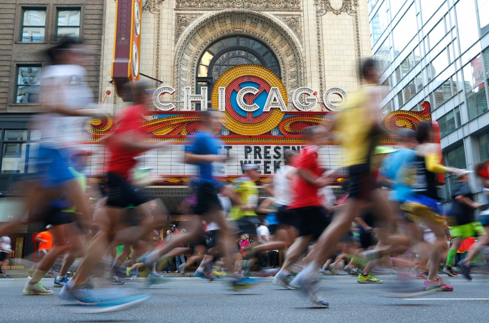
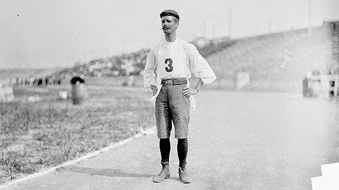

Un Maratón o Una Maratón es una carrera de larga distancia que consiste en correr 42.195 km.

E L M I TO
Batalla de Maratón (490 a.C.)


El nombre de la leyenda de Filípides , un mensajero griego, que habría sido enviado desde la bahía de Maratón a la metropolis de Atenas (40kms) con el objetivo de anunciar la victoria de los griegos frente a los persas.
Si no llegaba a tiempo, los atenienses quemarían la ciudad y matarían a los niños ante la creencia de haber sido derrotados.

Afortunadamente, habría logrado la hazaña, y luego de correr los 40kms con sus últimas fuerzas, se habría desplomado frente a Atenas ante el grito de nenikhamen o nike , que significa “hemos vencido”

Aunque la leyenda es muy bonita, existen algunos debates sobre la precisión de estos hechos, ya que existirían registros de que Filípides habría corrido, antes de la Batalla de Maratón, desde Atenas hasta Esparta (240km) a fin de solicitar refuerzos y luego volvió.

E N J U E G O S O L Í M P I C O S
Forma parte del programa de atletismo desde Atenas 1896 , en la categoría masculina , en la femenina.


El primer maratón olímpico se realizó el 10 de abril de 1896 y su ganador fue Spyridon Louis , un griego que corrió desde la llanura de Maratón hasta el estadio olímpico de Atenas ( 40 kms ) en 2:58:50 hrs.
Sin embargo, la distancia fue variando a lo largo de los años, hasta que en 1908 en los Juegos de Londres para que la Reina pudiera ver la salida desde el Castillo Windsor extendieron la distancia a los 42.195 km.

Finalmente, en 1921 la Asociación Internacional de Federaciones Atléticas fijó en forma definitiva que, la maratón consistiría en 42.195 km o 26.2 millas.

4 2 . 1 9 5